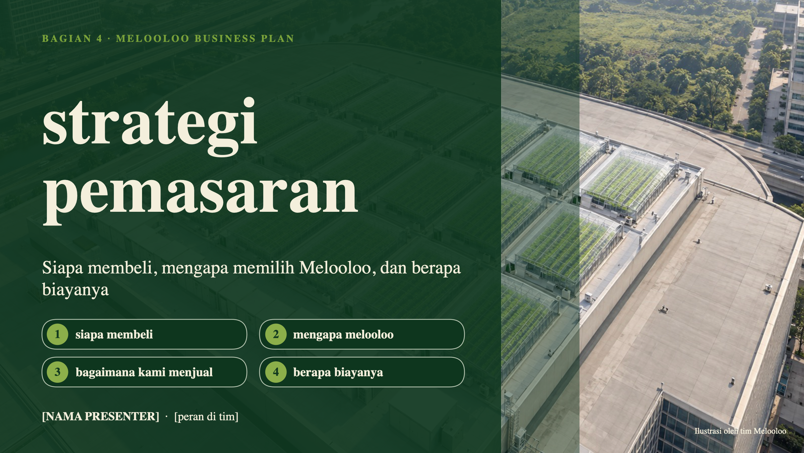

◒
melooloo
POWERPOINT ASLI
Strategi pemasaran · 15 slide utama
Slide cadangan ↗
Teks slide
Daftar slide ☷
⛶
←

Slide belum tersedia
→
Teks slide
×
Aktifkan JavaScript untuk melihat slide pemasaran.
Buka slide pertama
.